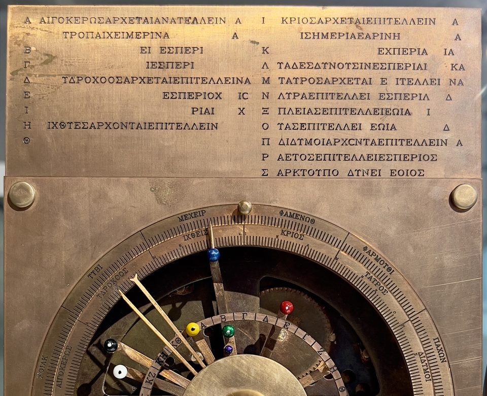
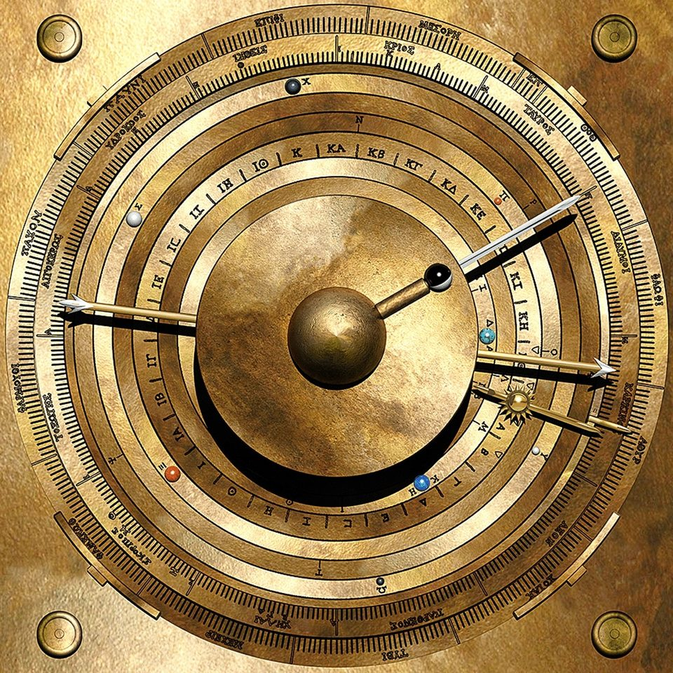

The Antikythera mechanism — gears from the bottom of the sea
It came out of a shipwreck as a green lump of bronze and wood, and sat for months in a crate while the museum attended to the statues. Inside were gear teeth a little over a millimeter and a half apart. It took a century of radiography and tomography to understand what they did — and not everything is known yet.
- Where
- Antikythera shipwreck, Greece
- Recovered
- 1901
- Shipwreck
- ≈ 70 – 60 BC
- Proposed dates
- they diverge: ≈ 205 to 87 BC
- Fragments
- 82
- Surviving gears
- 30
Antikythera is a small, high island between Kythira and Crete, at the point where the Aegean meets the open sea. In the spring of 1900, a boat of sponge divers from the island of Symi, captained by Dimitrios Kontos, stopped there to wait for the weather to improve. One of the men went down, and came back to the surface saying he had seen bodies on the bottom. They were statues — of bronze and of marble, scattered among amphorae on the slope, some forty-five to fifty-five meters deep, depending on which measurement is used.
The Greek government joined the operation with Navy ships, and between the end of 1900 and the autumn of 1901 the same divers, in helmet diving suits and with no decompression tables at all, brought up from the sea the cargo of a ship that sank in the first century before Christ. It is considered the first major state-sponsored underwater excavation. The cost showed up in the bodies of those who worked: one diver died and two were paralyzed by decompression sickness.
Along with the statues came a lump that nobody thought worth a second look. It was taken to the National Archaeological Museum, in Athens, and waited.

01The lump that had a wheel
The bronze, after two thousand years in the sea, had turned into something else: copper salts that cracked and shrank as they dried. The lump broke apart. On May 17, 1902, the archaeologist Valerios Stais, examining the pieces, saw a toothed wheel on one of the faces. The idea that it was an astronomical instrument came up quickly — and was met with suspicion, because nothing from that period had gears so fine. One school of thought even suggested that the object was much more recent and had fallen onto the wreck by chance. The rest of the cargo, however, was consistent, and the mechanism lay in the middle of it.
The German philologist Albert Rehm was the first to argue, in the early decades of the twentieth century, that it was an astronomical calculator. But the person who took the object out of the drawer for good was the historian of science Derek J. de Solla Price, who began studying it in the 1950s. In 1959 he published a popular article titled, bluntly, "An Ancient Greek Computer." In 1971, with the Greek nuclear physicist Charalampos Karakalos, he made gamma-ray and X-ray radiographs of the fragments — for the first time one could see what lay inside the crust. The result came out in 1974 in a monograph called Gears from the Greeks, with a tooth count and a first diagram of the gear train.
Price got the nature of the object right and part of the mechanism wrong — which is normal for someone working with flat images, in which several layers of bronze overlap in a single shadow. In the following decades, Michael Wright, a curator at the Science Museum in London, redid the study with linear tomography and built models that worked. The piece was changing category: from curiosity to document.

02What the tomography read
In 2005, a consortium called the Antikythera Mechanism Research Project — with Cardiff University, the universities of Athens and Thessaloniki and the museum itself — brought to Athens a high-resolution X-ray tomography scanner weighing several tons — the machine went to the piece, because the piece cannot leave the museum. In parallel, a variable-lighting technique photographed the surfaces so as to bring out engraved letters almost invisible to the naked eye.
The tomography separated the layers that Price's radiography had stacked, and did two things. It counted teeth with a precision that had not existed before, making it possible to reconstruct the gear train at the back. And it revealed text: the mechanism was covered in inscriptions, in Greek, on the plates and on the doors of the case, most of it hidden under the crust. Thousands of characters were read, in fragments of sentences, which work as a user's manual and a legend for the dials.
That is how the papers published in Nature in 2006 and 2008 described two of the device's most ingenious solutions. The first: a pair of stacked gears, linked by a pin running in a slot, made the Moon pointer speed up and slow down over the month — the mechanical way of representing the Moon's variable speed across the sky, the same one Hipparchus's lunar theory described in the second century before Christ. The second: the names of the months on the back dial belonged to a Corinthian-type calendar, and a smaller dial counted the years of the great Greek games.

In 2016, the team published, in an entire issue of the journal Almagest, the complete edition of the known inscriptions. Among them is a passage from the front cover that lists periods of the planets — with the numbers 462 and 442, tied to cycles of Venus and Saturn. It is the textual proof that the front showed, in some way, the five planets visible to the naked eye. The gears that would have done this did not survive.
03What it calculated: what was read and what was reconstructed
This is the distinction most often lost when the mechanism becomes a headline. There are functions that are in the pieces — engraved in text, or demonstrated by gears that exist. And there are functions that are in the reconstructions, for good reasons, but without the piece to check them against.
Read on the pieces
- Metonic cycle. The large upper dial on the back is a five-turn spiral divided into 235 lunar months — the interval that almost coincides with 19 solar years, the basis for reconciling lunar and solar calendars. The names of the months are engraved in the cells.
- Saros and eclipse prediction. The lower dial is a spiral of 223 months, the cycle over which eclipses repeat. In 51 of the cells there are signs indicating an eclipse of the Sun or the Moon, with the hour.
- Exeligmos and Callippic cycle. Smaller dials correct the third of a day left over in the saros and count the 76-year cycle.
- The games. A four-sector dial bears the names of the Isthmian, Olympic, Nemean and Pythian games, plus two minor festivals — those of Dodona and the Halieia of Rhodes. It is the only pointer that turns the opposite way.
- Sun and Moon in the zodiac, and the phase of the Moon. On the front, the signs and a ring of days. The Moon got its variable speed from the pin in the slot, and a half-light, half-dark sphere showed the phase.
Reconstructed, on strong grounds but without the gear
- The five planets. The inscriptions say they were there; the mechanism that moved them was lost. Several schemes have been proposed, all consistent with the text, none confirmable from the piece.
- The "true Sun." A pointer that would show the Sun's variable speed, like the Moon's. It is plausible from the logic of the design; there is no material proof.
- The draconic gear. The cycle that determines whether a new Moon becomes an eclipse. The group of Voulgaris, Mouratidis and Vossinakis proposes a gear for it; it is a proposal.

In March 2021, Tony Freeth's team at University College London published in Scientific Reports the most complete reconstruction of the front face: a cosmos of concentric rings with the planets, the Sun, the Moon and the lunar nodes, each on a ring, driven by compact gear trains consistent with the numbers in the inscription and with the pieces left in fragment D. The team itself opens the paper by recalling that only a third of the original survived. It is the best model available, and it is a model — the authors themselves say the next step is to build it to see whether it works.
04The date no one can pin down
The shipwreck is the fixed point. The amphorae, pottery and coins collected at the site — including those Jacques Cousteau's team found in the 1970s — place the sinking around 70 to 60 before Christ. The mechanism is necessarily older. How much older is where the sources diverge, and this dossier records the versions without choosing:
- About 150 to 100 BC — estimate from the first tomography studies, based on the letterforms of the inscriptions.
- About 205 BC — proposal by Christián Carman and James Evans, in 2014, based on the eclipses on the saros dial: the pattern fits a cycle that begins just after the new Moon of April 28, 205 BC. Freeth arrived at a similar starting date.
- A generation before the shipwreck — Paul Iversen, in 2017, from an analysis of the calendar and the games, argues that this example was made shortly before the first century BC, perhaps for a client in Epirus.
- About 87 BC — a later dating that appears in popular literature.
- December 23, 178 BC — proposal by Voulgaris's group, in 2022, for the initial calibration date; other authors prefer 204 BC.
There is a trap in that list. The starting date of a cycle is not the date of manufacture. An eclipse dial may have been computed from an old epoch and engraved decades later, just as an almanac may start its count in a year that has already passed. Part of the disagreement is about facts; part is about what each date is measuring.
And there is a new datum that should not be misread. In the 2025 campaign, the hull timber recovered at the site was given a preliminary date of around 235 BC. That speaks of the tree, not the shipwreck: ships were built and repaired with wood cut earlier, and used for decades.

05The 354-day ring
For a century, the outer ring on the front was read as an Egyptian solar calendar of 365 days, because it bears the names of Egyptian months transcribed into Greek. Beneath it, in a channel, there is a row of small holes into which the ring fitted. Only a stretch survived, and the question was how many holes there were in the full circle.
In 2020, Chris Budiselic and colleagues measured the position of the holes in the tomography images and concluded that the most likely number was 354 — the length of a lunar year, not a solar one. Then two groups redid the calculation using different statistical methods: Graham Woan and Joseph Bayley, of the University of Glasgow, in 2024, arrived at 354 or 355 and considered 365 implausible; Malin and Dickens arrived at an estimate of around 352, with a margin that includes 354 and leaves 365 with less than a one-in-ten-thousand chance. If the reading holds, the ring was a lunar calendar with Egyptian names — a rare combination, which changes how one imagines the device's everyday use.
The mechanical consequence is still being worked out. In March 2026, a study by Jian-Liang Lin in the journal Results in Engineering proposed three gear schemes capable of moving a pointer over a ring of 354 divisions. These are engineering solutions compatible with the pieces, not discoveries of a new piece.
06Discovered yesterday: what changed in 2025 and 2026
The uncomfortable question: did it work?
In April 2025, Esteban Szigety and Gustavo Arenas, from Argentina, released as a preprint a simulation of the effect of the triangular teeth and of manufacturing inaccuracies on the pointers. The conclusion is cautious and was badly summarized in many headlines: the triangular shape, on its own, causes almost no error; the problem is the inaccuracies measured in earlier studies, which, if real, would make the gears jam or slip. The authors themselves write that "either the mechanism never functioned or its actual errors were smaller than those reported" — and give reasons to prefer the second, because the measurements come from pieces deformed by two thousand years of corrosion. The idea that the mechanism was a "toy" circulated in the press; it is not the conclusion of the paper.
The hull, for the first time
The site is still being excavated. Since 2014, Greece's Ephorate of Underwater Antiquities has worked there with technical diving, photogrammetry and robots, and since 2021 with the Swiss School of Archaeology in Greece. In 2016, human bones from a crew member were recovered. In the campaign from May 23 to June 20, 2025, announced by the Greek Ministry of Culture in July, the team raised for the first time an articulated section of the hull — three planks attached to a cross member —, along with amphorae from Chios, a ceramic mortar and the base of a marble statue. No new fragment of the mechanism had turned up as of the 2025 campaign.
The eclipse gear, revised
In August 2026 a study came out in volume 17 of the journal Almagest, which specializes in the history of science: Aristeidis Voulgaris, Christophoros Mouratidis and Andreas Vossinakis revise the draconic gear missing from the mechanism. They take into account the deformation and shrinkage of the pieces after two millennia in the sea, and argue that, with this gear, all the eclipses on the dial — those preserved and those lost — can be recalculated from the alignment of three pointers. The conclusion they draw is strong: the engraved eclipses would have been calculated mechanically, not copied from observations. It is one group's thesis, published with peer review, which other researchers have yet to discuss.
07The readings, from the most sober to the most improbable
A Greek astronomical instrument, from a tradition that was lost
It is the reading the pieces impose. The text is in Greek; the months are from a Greek calendar; the cycles are those of the Babylonian astronomy the Greeks inherited; the irregularity of the Moon follows Hipparchus's theory. And it is not alone in the written record: Cicero, in the first century BC, describes mechanical spheres attributed to Archimedes and to Posidonius, which showed the motion of the Sun, the Moon and the planets.
What is extraordinary is the survival, not the existence. Bronze was reused; a device like this, outside a shipwreck, would have been melted down. The quality of the work suggests workshops with practice — and therefore other devices, which have not come down to us.
Rhodes, Corinth or Syracuse: where it came from
The Corinthian calendar led to the hypothesis of a Corinthian colony — Syracuse, the city of Archimedes, was proposed at one point, and then ruled out for this specific calendar in 2017. The lunar theory and the presence of the games of Rhodes point to the school of Hipparchus and Posidonius on Rhodes. The games of Dodona and the names of the months suggest a client in Epirus. A conciliatory reading holds that the design may be Rhodian and the example commissioned for northwestern Greece. No proof settles it.
A complete planetary display on the front
The inscriptions call for the five planets, and the 2021 reconstruction shows that they fit in the available space with gears of the type the piece already uses. But none of the planetary gears survived, and more than one scheme is compatible with the text. It is the gap between "it was there" and "it worked like this."
It never worked properly
It is the extreme reading of the 2025 study on tolerances. It depends on the manufacturing errors measured on the corroded pieces being the original errors — which the authors themselves doubt. A device with usage inscriptions, pointers, a manual and calendar adjustments was made to be used; whether it was accurate, and how accurate, is a legitimate question.
Alien technology, or that of a lost civilization
The mechanism is one of the favorite pieces of the "out-of-place artifact" literature, and the argument is always the same: too complex for its time. The pieces say the opposite. The teeth are triangular and uneven, cut by hand; the metal is ordinary bronze; the cycles are those of the astronomy of the time, with the errors of the time; the text is Greek, with the names of Greek festivals. There is not a single element that cannot be explained by documented Hellenistic knowledge.
What the mechanism overturns is not history: it is the idea that the Greeks only theorized and did not build. It shows a real mechanical tradition that disappeared and only reappears, with comparable complexity, in the astronomical clocks of fourteenth-century Europe.
08Chronology
- ≈ 205 – 87 BCRange of the proposed dates for the design, the calibration or the construction of the mechanism. The sources diverge.
- ≈ 70 – 60 BCThe ship sinks off Antikythera, loaded with statues, pottery, glass, coins — and the mechanism.
- spring 1900Sponge divers from Symi, with captain Dimitrios Kontos, find the wreck while sheltering from bad weather.
- 1900 – 1901Salvage operation with the Greek Navy. One diver dies and two are paralyzed. The mechanism comes out of the sea in 1901.
- May 17, 1902Valerios Stais notices a toothed wheel on one of the pieces, at the National Archaeological Museum.
- 1959Derek de Solla Price calls the object an "ancient Greek computer" in a popular article.
- 1971Price and Charalampos Karakalos radiograph the fragments with gamma rays and X-rays.
- 1974Gears from the Greeks comes out, the first detailed diagram of the gear train.
- 1976Jacques Cousteau's team returns to the wreck and collects, among other things, coins used in dating it.
- 2005The Antikythera Mechanism Research Project carries out the X-ray tomography and surface imaging in Athens.
- 2006 and 2008Papers in Nature: the pin in the slot that reproduces the Moon's variable speed; the Corinthian-type calendar and the games dial.
- 2014Carman and Evans propose 205 BC as the starting epoch of the saros dial. A new series of dives at the site begins.
- 2016Complete edition of the inscriptions in the journal Almagest. Human bones of a crew member are recovered from the wreck.
- 2020Budiselic and colleagues count the holes under the calendar ring: 354, a lunar year.
- March 2021Tony Freeth's team at UCL publishes the reconstruction of the front in Scientific Reports.
- 2024Woan and Bayley, in Glasgow, redo the hole count by another method: 354 or 355. A third analysis, by Malin and Dickens, comes close to 352. The 365 is practically ruled out.
- April 2025Szigety and Arenas release the preprint on triangular teeth and tolerances.
- May – June 2025A campaign at the wreck recovers, for the first time, an articulated section of the hull.
- March 2026Jian-Liang Lin proposes, in Results in Engineering, three gear schemes for the 354-division ring.
- August 2026Voulgaris, Mouratidis and Vossinakis publish in Almagest the revision of the draconic gear and the thesis that the eclipses on the dial were calculated mechanically.
09What remains open
Who made it, where and when. There are three strong candidates for its origin and a range of more than a century for the date, and part of the disagreement comes from each date measuring something different — the starting epoch of a cycle, the letterforms, a client's calendar.
What the front looked like. The planets were there, the text says. How they moved is reconstruction, and there is more than one that respects the numbers. The same goes for the true-Sun pointer and for the draconic gear.
How well it worked. It depends on how much of the inaccuracy measured today is corrosion and how much is manufacture — a question that only a replica made with the methods of the period, and not with modern machines, can begin to answer.
Whether there are more pieces on the bottom. Fragment F was found in 2005 in a crate in the museum itself, not in the sea. The site is still being excavated, and a second cargo some two hundred meters away has not yet been explained. A new piece of the mechanism would settle disputes that the text and the tomography cannot.
10Frequently asked questions
What is the Antikythera mechanism?
It is a Greek bronze astronomical calculator, with gears, recovered in 1901 from a ship that sank off the island of Antikythera around 70 to 60 before Christ. There remain 82 fragments and 30 gears, about a third of the original device.
How did the Antikythera mechanism work?
One turned a crank, and the gears turned the passing of days into positions and cycles: the Sun and the Moon in the zodiac, the phase of the Moon, the Metonic cycle, the saros of eclipses and the years of the Greek games. All the “programming” is in the tooth count. The planets were there, according to the inscriptions, but the gears that moved them were lost and are reconstruction.
Who made the Antikythera mechanism?
No one knows. The lunar theory follows that of Hipparchus, and the hypotheses about its origin point to Rhodes, to a Corinthian colony or to a client in Epirus; Cicero describes mechanical spheres attributed to Archimedes and to Posidonius. No proof settles it.
How old is the Antikythera mechanism?
It is older than the shipwreck, of around 70 to 60 BC. How much older, the sources disagree: the proposals range from about 205 to 87 BC, and part of the disagreement comes from each date measuring something different — the starting epoch of a cycle, the letterforms or the calendar.
Where is the Antikythera mechanism now?
At the National Archaeological Museum, in Athens, where it was taken after the salvage. The piece cannot leave the museum: in 2005, it was the tomography scanner that went to it.
11Sources consulted
This dossier is original writing. The sources below were consulted to verify dates, measurements and attributions; none was reproduced.
- Consolidated encyclopedic entries on the mechanism and on the Antikythera shipwreck — discovery, fragments, dials, proposed datings.
- Price, D. J. de S. — Gears from the Greeks: The Antikythera Mechanism, a Calendar Computer from ca. 80 B.C. Transactions of the American Philosophical Society, 1974.
- Freeth, T. et al. — Decoding the ancient Greek astronomical calculator known as the Antikythera Mechanism. Nature, 2006.
- Freeth, T. et al. — Calendars with Olympiad display and eclipse prediction on the Antikythera Mechanism. Nature, 2008.
- Carman, C.; Evans, J. — on the starting epoch of the saros dial. Archive for History of Exact Sciences, 2014.
- Jones, A.; Bitsakis, Y. et al. — edition of the mechanism's inscriptions. Almagest, vol. 7, 2016.
- Iversen, P. — the mechanism's calendar and Epirus. Hesperia, 2017.
- Freeth, T.; Higgon, D.; Dacanalis, A.; MacDonald, L.; Georgakopoulou, M.; Wojcik, A. — A Model of the Cosmos in the ancient Greek Antikythera Mechanism. Scientific Reports, March 12, 2021.
- Budiselic, C. et al. — count of the calendar ring holes, 2020; Woan, G.; Bayley, J. — An improved calendar ring hole-count for the Antikythera mechanism, 2024; Malin, D.; Dickens, J. — independent estimate of the number of holes.
- Szigety, E. G.; Arenas, G. F. — The Impact of Triangular-Toothed Gears on the Functionality of the Antikythera Mechanism. Preprint, April 2025.
- Hellenic Ministry of Culture and Swiss School of Archaeology in Greece — results of the 2025 campaign at the Antikythera shipwreck, July 2025.
- Lin, J.-L. — New reconstruction designs based on the Re-decrypt calendar dial on the front plate of Antikythera mechanism. Results in Engineering, vol. 29, March 2026.
- Voulgaris, A.; Mouratidis, C.; Vossinakis, A. — Revising the Draconic Gearing of the Antikythera Mechanism, the Eclipse Events of the Saros Spiral, and Their Classification. Almagest, vol. 17, no. 1, 2026.